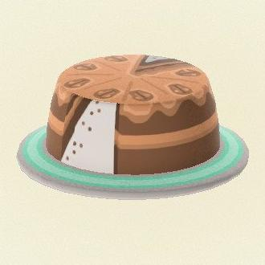

Brewster's Coffee Cake

Description
A cake that could only have been made by a pigeon as perfect as Brewster himself, Brewster's Coffee
cake is a delight to the senses. With lush tones of chocolate, grape, raisins, and birdseed,
Brewster's coffee cake is sure to delight cake lovers and coffee drinkers alike.
Ingredients
- .5 lbs of ground coffee
- .5 lbs of bird seed
- Cake Mix
Steps
- Put the ground coffee and bird seed in a bird house.
- Pay the gyroid outside the birdhouse approximately 1200 bells.
- Wait until the following day. Consume the cake mix if you get hungry
- Inside the birdhouse will be your coffee cake!